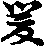
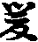

四分律鈔簡正記卷第二(釋鈔題目一十一字)
第二判釋科條。廣辨教之文義。於中分二。初略辨科分。二依文廣解。初中大凡一切聖教。大科有三。謂序正流通。諸餘小科。皆從此出。若據西域。親光菩薩。造佛地論。解佛地經。已科三分。若論此土。從後漢佛法初來。未有科要。因秦王請。講楞伽經義。諸德促平甲解判。王乃問言。朕聞佛教幽微。至理玄奧。適觀所講科目全無者何。諸德遭問。各鄙耻龍顏。時東晉道安法師。遙聞此言。憤悱心口。遂科一切教文。總為三段。即序正流通也。其時雖即懸科。未有憑准。後因佛地論流至此方。彼論之中。果有斯說。故彼云。於此經中總有三分。一者教起因緣分(即序分也)。二聖教所說分(御正宗也)。三依教奉行分(即流通也)。語別意同。故知安法師。冥狀聖旨。故青龍疏歎云。妙理潛通。慧心懸合。彌天之構。豈虗言哉。所言教起因緣分者。謂明教起。及教起處說教因由。即是教起所因所緣。二正顯聖教所說法門品類差別。名聖教所說分。三者顯彼時眾聞法獲益歡喜奉行。名依教奉行分。自後凡是教文。皆依此判也(已上略述科判因由)。今則正明科判者。先科律本。後科鈔文。就律本中。初聖科後凡科。且聖科者。謂部主分宗時科有四大段。即大僧戒本為初分。尼律下為第二分。安居犍度下為第三分。房舍犍度下為第四分(此且據四分所宗律本以科分。若約大藏毗尼。佛在日及結集時所非承也)。二約凡判者。謂安法師科也。先科律文。後科鈔文。且律本者。初從稽首乃至知時已來。為序分。二從世尊在毗舍離。一為正宗。三從五百結集下至末文。為流通分。所言序分者。顯宗由致發起之端。稱為序分也。正宗者。正明犯不犯輕重等相被時之益救。流通者。法傳季世流而不壅故(科律文○)。次科鈔文者。右今章記所判不同。若准後堂順正等記。以總別兩序。為序分。標宗已下二十九篇為正宗。諸部別行一篇。為勸學流通。其理不然。廣如別破。或依搜玄將三十篇為正宗。即無流通。今依顯正科為三段。前二與玄同。第三將後批文。為付囑流通分。此准法華慈恩玄贊。亦將後批文。為流通也。故彼云。基以譚遊之際。途次博陵道俗課靈命講斯曲等足為高例(云云)。問此後批如何得流通。答夫流通有二。一者勸學流通。隱在諸篇之中。不別科出。促隨明行事之處。策勵後人。令其習學。如下文方幸敬而行之。或云違法毗尼。當如是學。又云。不知鏡不思之等。此皆勸學之意也。二付屬流通者。述其製作時處因由。令後人披覽時代顯然。今此流通乃當付囑也。問總序自題云序。此則有憑。十問既不題序名。阿得亦科為序。答前是別題。通收兩序故。皆得名序分(不同顯正解所)。問律教唯被具戒。是其正修。沙彌既非具位。何故沙彌篇。在正宗中攝。答有說。一者如來所制皆通五眾戒。下文皆結三眾罪。又沙彌得聞吉羅之名。二者此篇廣明大僧攝受方法。是以亦得在正宗中攝也。問道俗一篇所明既非內眾。如何得入正宗。答若望所化境非正宗。然僧為能化之人故。得入正宗攝。故下文云。幸細覽而告傳等(云云)。問諸部別行篇。既與四分全別。如何得在正宗所收。答雖不同於四分。乃是他部正宗。彼此雖殊。行事正宗是一。或有他宗事起請我四分律師處判須善他宗。故下文云。博學為濟貧。此言誠驗等。又別序第三門中。不得輙將己所學者。判他持犯。又輕重儀云。約之受體。紛諍自銷。今既判三十篇。齊號正宗。須分兩意。前二十九篇是四分律師行四分之事正宗。第三十篇是四分律師行他部之事正宗。賓主二途條然分曉也。問夫講解者。先合釋於名題然後科判。今題名未解。何故直爾分科。答科之由著前著述文勢。若著述是通。題下自注云并序。此通一部之文。便須先釋題後科判今緣。此鈔是別題。准收二序故。先分科後向序中。始釋題目。又於正宗之首。更有名題故。此先科然後解釋(上來略辨科分因便問答分別)。
次依文廣解。即分為三(云云)。就序中分二。初釋序之通題。二依序別釋。前二。初正釋所撰之法題。二京地下辨能作人之名號。前二。初正釋法題。二注簡異。初法題有十一字分二。初解四分律三字。舉本宗之都目。次解刪繁下八字。標今作者之別名。今且解都目三字者。以三問料簡。初總別相對與科簡。二離開別釋。三結歸六釋。初門總別料簡者。四分二字是別。五部中之一名也。律之一字是總。五部之都目。如是兩名不可闕一。若無四分別名。難以顯其通科故。初開標四分。開卷識宗。便知是四分家之律。非餘五分十誦等。若闕律之總號。無以收其別名故。後標律字。若促云四分。即四分之名。隨轉不定。為四分。經論紀傳等。令向下標其律字。即簡非餘也。又若據次第先後。律合居先。佛在之時便有四分。理合居後百載方興。今迴四分在先。唯為簡異他部也(上來惣別料簡竟)。二離開別分二。初解四分二字。次解律之一字。初言四分者。梵語折埵理。或云只埵理。此云四者分四者數也。分者段也因也。因部主支離大藏毗尼以為四段。故云四分。即大僧戒本二十卷為初分。尼律下十五卷為第二分。安居下一十四卷為第三分。房舍下一十一卷為第四分。問此之四分名目。起自何時。答有兩解。一正釋。二辨非。且正釋者。遠自如來金口懸記近因部主分宗。且遠自如來金口者。准大集經聲聞品。佛告憍陳如。我滅度後。有諸弟子。受持如來十二部經。書寫讀誦。顛倒解義。顛倒說法。以倒說故。覆隱法藏。名曇摩鞠多(已上經文)。此是佛在日。懸記已後。合有此律。流行於世。佛既滅後。迦葉結集。五聖任持。如水傳器。過百年末。第五師鞠多傳法之日。正當育王化世大集商量佛法因有乖諍。遂分大藏毗尼為五典。其中一部。名曇摩鞠多。遠想如來懸記之言。乃執四分之號。部主自言。我欲說無先說有欲談有先即是顛倒解義。況我復號曇摩鞠多。名字既同。我所執法。合明四分。遂即四度傳文。盡所詮相。念出四段之文。應彼四分之說(已上略申正解)。次敘非者。按南海寄歸內法傳。義靜三藏。作如是說。四分之名。因梵筴立號。謂梵筴有四。每筴翻出一分。四筴翻成四分。彼却難前解云。若言因誦立名者。其理不然。且波離大羅漢。當初結集。尚八十度。昇座誦終不可。曇無德四度傳文。念終律藏。今依發正記破云。縱使梵筴有四。每筴翻云一分因。得四分之名。若爾四分之秤無來。起自此方未審。在西土之時。一千年中。以何標目。次奪破者。謂此律文。元無梵筴。至此其時。覺明三藏。促口誦筴文。秦主恐誦文訛濫。遂將羗(於羊反)籍藥。五萬餘言。以誠之二日念終。執文覆之。不遺一字。秦主深信方許翻。初當既梵筴到於此方。何故解云因筴立號(前言差藉者。秦主姚萇本是西羗人領軍降前符堅為龍襲將軍後都長安為後秦。其部類多是羗人。故云籍也。藥方即易知。云云)。彼適難云。波離尚八十度誦。曇無德豈四度念終者。初結集時。文句散落。故難致八十度。分部時已詮上文墨竟易故。所以四度誦也。故智論云。摩偷羅國毗尼。有八十部。罽賓毗尼。促取要用者作十部。言八十部者。彼自解云。八十誦也。十部者。謂十誦也。至於五分亦然。引此證之故。知因筴立名全成靈委(上來四分兩字竟)。次釋律之一字分二。初翻名。次釋義。且翻名者。戒疏云。據其能所。都有三名。一梵語毗奈耶。毗那耶。鞞泥迦。並翻為律。即能詮教也。二梵語尸羅。此翻為戒。謂所詮行也。三梵語波羅提木叉。此云別解脫。所感果也。因教起行。行不徒然。必有感果。故解脫絕縛。最在其終。戒疏又問。既有三名。何故前標律秤。答律則據教能生行解。五眾依茲奉持德故。名為戒因。戒尅剪業。或斯亡故名解脫。是則果兩行。皆由教生。故先舉教用攝斯二。或可三皆一化。始終不可具須。故具標律。今云四分律。不云四分戒解脫也。問毗尼翻律。為正翻義翻耶。答乃是義翻非正譯。故諸家相承。引唐三藏譯經。有翻者有不翻者。且不翻有五。一生善故不翻。如佛陀云覺。菩提薩埵此云道有情等。今皆存梵名。意在生善故。二秘密不翻。如陀羅尼等。總持之教。若依梵語諷念加持。即有感微。若翻此土之言。全無靈驗故。三含多義故不翻。如薄伽梵。一名具含六義。一自在(不永繫屬二種生死故)。二熾盛(智火猛熖燒煩惱薪)。三端嚴(相好具足所莊嚴故)。四名稱(有大名聞遍十方故)。五吉祥(一切時中常吉利故。如二龍主水七步生蓮也)。六尊貴(出世間所尊重故)。今若翻一。便失餘五。故存梵名。四順古不翻。如阿耨菩提。從漢至唐。例皆不譯。五無故不翻。如閻浮樹影透月中生子八斛瓮大。此間既無。不可翻也。除茲已外並皆翻譯。就翻譯中。復有二種。一正翻。二義翻。若東西兩土。俱有促呼喚不同。即將此言用翻彼語梵。如梵語莽茶利迦。此云白蓮華。又如梵語斫摳。此翻為眼等。皆號正翻也。若有一物西土即有。此土全無。然有一類之物。微似彼物。即將此者用譯彼言。如梵云尼拘律陀樹。此樹西土其形絕大。能蔭五百乘車。其子如油麻。四分之一。此間雖無其樹。然柳樹稍積似。故以翻之。又如三衣翻臥具等並是(云云)。今此毗尼翻彼律。蓋是義翻。以佛在西土出興。說此毗尼之典。此方本無佛化世。故無正翻。然後彼佛說毗尼。詮五犯聚。禁約五眾。不許有違。此方俗詮於五形。亦為制御萬民。令無全起過。義類相似。防非又同。故將此土律名。翻彼毗尼之號。古來更有多般。慮煩不敘(上翻名竟)。次釋義者分三。初律。二戒。三解脫令。初釋律義。如下文。律者法也。詮量輕重犯不犯法。並律所明。即律詮也。又戒疏云。律者法也。從教立名。斷割輕重。開遮持犯。非法不定。故俗有九添。法居其一。故世付法皆約形科。道與俗違。形名乃異。至於處斷。並依常法(已上疏文)謂道俗居處。刑法相貌。各各不同。然其有犯之徒。處形法斷須依常法。又律者筆也。此律字彳旁從聿。聿者取筆聲。亦訓於筆也。如此方本是秦蒙恬所造。說文中用以文也。楚時謂之聿。吳時謂之律。燕時謂之弗。秦時謂之筆。令律害訓筆者。取割裁量之義也。戒疏云處効(胡德反唐韵云推勘罪人之貌也)。決正非筆不定。筆不定筆即法家之眾也。又律者分也。如律呂之分氣。又俗中有三種律。一者陰律。二應律。三格律後一如下自明。今且明上二者。謂十二月中隻為律屬陽。偶為呂屬陰。正月姑洗太蔟。三月姑洗(蘇曲反)。五月[卄/(麩-夫+生)]賓。七月夷則。九月無射。十一月黃(此六名律也)。二月夾鐘。四月仲呂。六月林鐘。八月南呂。十月應鐘。十二月大呂(此六名呂也)。即陰陽呂之二應律者。月令云。用斤為律管。其管各有寸數。恐繁不引(云云)。即用葭(音加)灰(即慮花灰)實之於管十二月中。氣至灰動。應於節候。軌尅不改。故云應律。故戒疏云。陰陽雖無形。假以律管。籚灰用分節候。藉此分之令。內教亦然。順體分成二持。違體分成二犯。非律不明。亦同律呂之氣也。戒疏又問。律以法訓。施造有儀。與餘兩藏復有何別。答不同也。餘藏明理之在靈通。隨達一門皆符道觀。五百身因。無非正說。商那定現。鞠多不測其涯。意在去滯。何局文言。律則不爾。輕重開遮。楷摸不定。亂常敗續(功業也)。必據科治。由此而言法義彌顯(已上疏文)。
准斯意道律教偏有裁斷揩定之功。餘二無功能。故偏訓法也。疏又云律雖義約形斷。全乖科據有方呂斥相似。故且當譯見意便上(已上疏文)。言呂斥相似者。約五種治罸。階降不殊。重者重治。輕者輕罸。即無別也。疏又云。律者法也。始終有儀。於佛教可成此義。故篇聚之設。三世同遵。乃適化殊。性戒常定。律則不爾。代有沿革。古用肉形。形者戒也。一毀其肉。終身永定。不可復也。准斯意者。如俗格律有其新舊準。或有於格品故也。舊五刑者。是秦相公孫鞅(於兩反)。封為商君。所制也。一墨。謂以刀鑿額作賊字。後以墨染使青也。二劓(魚器反)。截鼻也。三躬。男女不以禮交者。男則去勢分。女則填宮也。四割謂耳也。五則則足也。其過最重。蓋隨前犯。准上治定。後漢相蕭何。尅為[邱-丘+替](昨何反)。信。製新五形。以定三千。金科玉條。代於古法。一笞(刃之反)者。小杖曰笞。笞耻也。如[卄/補]鞭等耻。此有五等(一十二十三十四十五十)。笞令青色以像東方甲乙木屬青。二杖者。大笞曰杖。杖者長木也。亦五等(六十七十八十九十一百)杖令見面其色赤。以像南方丙丁火屬赤。三徒者奴也。苦處駈使夜即禁白日。徒有日暮之功。其色白。以像西方庚辛金屬白。四流者散也。三等(二千里二千五百里三千里)似水之東流。更無西返。其色黑以像北方壬癸水屬黑。五死者盡也。二等(一絞二斬)人死魂魄歸於上天。骨肉下埋於土。以像中方戊己土屬黃。已新舊五刑雖別莫不背。為控制萬民。不令起過。懼於刑罸也。西土法王之律。亦復如然。常作堤防。令非不起故(已上釋律義竟)。
二釋戒義者。戒疏云。戒警也。警策三業。遠離緣非明其因也。又戒者禁也。以善禁惡等(云云)。三釋解脫義者。已離障染。永出塵勞。業惑期云。故云解脫。解脫不同。有二種。一因時解脫。二果時解脫。言因時解脫者。對境防惡。暫伏過非。望不起染邊得解脫。二果時解脫亦有二。一別解脫。二究竟解脫。言別解脫者。人天果是若約人天果。未免輪迴。未令得彰解脫。今且望不入三途中。得名解脫也。二究竟解脫者因。謂或淨定慧發生故。經云。或淨有智慧。便得第一道。又或疏云。道或名解脫。事戒名別解脫。又云或鄣有二。初則業非。二則煩或。淨鄣業或待智云。分望斷除。故名解脫。後智除或。乃稱究竟(上解脫義竟)。
上來正辨能詮律義因。便明所詮戒。及解脫義。總是翻釋義竟。上來有二收科(云云)。第三結歸唯釋者。問何故有此問來。答上之所明。四分是四段之文。律是儀。從四段文下而出。於中體用。能依所依。勝劣異同。無想濫。故須簡異。是以須明也。又西天凡是文字有兩字。已上有體用者。皆須約釋簡之時。或雖有兩字。且無體用。不可一例也。就引文中。便分為二。初汎明。二結歸所屬。初中梵語沙吒多(此云六)。煞三摩娑(此云離合釋)六謂舉數。先離後合。釋者解釋(已上通名)。次別列者。頌曰持業依主。并有財。隣近。相違。及帶數。初持業者。寶法師云。持謂任持。業謂業用。體能持用故。如云眼根是清淨。四大所造之色是體。根者有增上發識之能名用。此眼即根。又如藏識。識即是體。藏即含藏是用。先用後體。攝用歸體。此藏即識。所以不云識藏者。恐濫前諸識。不能含藏故(上且約單持業)。更有同依持業。謂約多用同一體故。如言分段生死身。生與死是二。同依一體。又如變化身。身是體。變化是用。於此身上。有能轉換。本質并無。而歘有之用。故變化即身。亦有四用。同依一體。如云變易生死身。變麤身為細色。易短命為長年。無漏力初資曰生。勢分將盡時名死。此之四用。俱依一身也。二依主釋者。依謂憑依。主謂主宰。寶法師云。能依所依俱。於中有二。一依主。二依士。若舉勝顯劣名依主。如云眼識。眼謂眼根。是所依勝。識謂了別。是能依即劣。今云眼之識(依主也)。或舉劣顯勝。如云擇滅無為。本是有為因。此擇所證故。今云擇滅之無為。是依士釋(又云倒令依主者非也)。三有財者。謂對無立名財。謂世間財寶有。故曰有財。寶法師云。能有所有俱。於中有二。一全有財。如呼護法神為金剛。金剛本是杵號。梵語跋折羅。此云金剛。狀有三陵。如喬麥子。能摧萬物。取此杵名。以彰神號。又如菩提薩埵。上求菩提下化薩埵。故離此聖人體外。有彼菩提薩埵也。二分有財者。如云金神或云富兒。半月於人名故。四隣近者。寶法師云。竪隣橫並。俱以多法相近一處。促舉一近者立名。如云四念住。謂觀身受心法時。雖是慧力簡擇。又須假念力明記。今慧隣近於念。故云念住也。五相違者。寶法師云。諸法名等殊。如云持犯。上作大小等(云云)。六帶數者。寶法師云。謂諸法名等數。如云一乘二諦三身四智五眼六通七覺八正道九有情居十遍一切處等(上來汎相王竟)。次結所屬者。問今四分律之三字於上只釋中具幾釋。答若依諸記具二釋。一帶數持業。二帶數依主。今准承稟云具三釋。一帶數。謂律是法。法上有四分之數。豈非帶數(有云。若准明四分二字。即成帶數者。未詳也)。二持業。謂四分是四段能證詮之文。以聲聞句文為體。即是體。律是律儀。即所詮之行。有斷割持犯揩摸輕重之功用。今四分之體。能持此用。攝體歸用。四分即律。三依主。律是能依。四分是所依。四段能詮文是色。唯有漏即劣。所詮律儀通漏無即勝。今舉上劣四分。顯下之勝律。即四分之律。依士釋(不湏云倒合依主)。已上三門。總是釋初三字都目竟。
二刪繁下八字標今作者之別。名之此對昔來未曾有也。釋此八字分五。初釋刪繁二字。二辨補闕二字。三明行事二字。四辨鈔之一字。五解序之一字。今且釋刪繁二字者。刪者聲類云定也。廣雅云削也。三蒼云除也。仲尼刪詩定禮。今師刪定。或律此之刪字冊旁刀。乃會意字也。如俗中通明文字有六。一像形。像物之形。如日月等字。二會意。如止戈為武人言為信等。三形聲。或左形右聲。或如補闕律等字。四指事。如上下字等。五假借。如長乞樂(皆去聲呼)。六轉注。如老可叵孝等。今刪字。上六中是會意字也。良以古來無紙。凡綴文章。皆書簡牘。以熟韋編之。故夫子讀易韋編三絕。即其意也。故刪字堅之四盡。表於簡牘。橫之兩盡。以像熟韋古來刀筆。當者留之。不當以刀削去。故刪字安刀。即除段之貌也。後漢蔡倫。造紙以替簡牘之文。亦今者從冊安刀。猶是會古之意也。長也。濫也。惡也。敏下安系(覔音)。亦會意也。字上略訓釋。今廣解者。東吳所立。非正不敘。西明新規。有其四種。唯據當宗以說。一繁廣。繁如律中僧尼二部。戒本緣起。六百餘條。廣明國土犯。有人呵責等事皆是當初一期制戒。□□翻譯依其本有六。錄在文中。至于末代所准。要知其持犯故。於釋相篇中。唯明滿足戒本。尺持犯兩相。其餘閑後。皆悉不明。故下文云。貴在得其本詮誠難竅其條緒等。又如長衣戒得不得章。都有八門。各有轉降十章四十六句。甚為繁廣。今鈔侶云一日得衣二日不得乃至十一日。通皆不犯。唯有一行來鈔文攝得數行律文也。又如滅諍事律自一犍度今鈔但云。七滅諍中罪亦滅有但為竟。於四諍彼此未知。乃至徒勞宣釋。終未窮盡。故略不述等。律文既繁。古人章疏亦廣。今於此中。一時刪削。故下文云。常恨前代諸師所留遺記等。二繁長。繁者此全非今所要名長。如律明。善來等四受並是。往前之事鈔中。皆略不明。唯存羯磨一途。當世盛行之法。更有破僧和僧等事。悉是剩長之文兼章疏。解律繁辭。亦同刪削。三繁濫。繁者是非相混曰濫。如律結界法中。東方有山稱山等。是一期出法之語。今若立標相。須知限齊。又須委標相及體。三種分齊。分明方可加法。不同一席之法。聊知空礙兩分等。又古人見律有知淨之言濫引向打鐘上用。又古見律結界云。各一拘盧舍字。便執自然。界體定方七十三步。集僧一夏。唯開三度受日等。皆是蕪穢。濫於真宗。純金雜於砂礫。今並刪之。故下文云。濫述必剪用成通意等。四繁惡。繁此非律有促。從濫中流出。如古人見律文治罸。弟子斷食奪衣。日中五等。倣此遂行鞭杖。以作訓治。委引偽經。三百福罸。及真經三字之喻。或立非法。制限罸錢及米。伏地吹灰。有過之徒罸令除草等。悉為鄙惡。惡並刪之。故下文云。今故刪其繁惡等。除此四繁之外。其餘要當皆列文中。如下諸篇所引律云。四分文云。等並是(上釋刪繁)。二字竟。
二辨補闕者。補謂裨補。左形右聲也。闕者謂欠闕。闕少上形下聲。謂全約佗部三藏之文以說。謂上既於四分刪除四繁。餘有的當之文。其文絕少。對教行事實。未周旋故。引佗部流類之文。鴻稗未足。故云補闕。於中有二。若事法全無名闕。分無名缺。今舉全無之闕。以攝分無之缺。下諸部別行篇云。若四分缺於事法等。即舉分無之缺攝金。全無之闕也。今依西明。大要有二。謂文補及義補也。展聞即成五補。經律論記傳并義補也。若處中唯三。三合為一補。記傳為義補為三。今引且明三補。初三藏補。就三中從親至疎。且引佗部律流類相似者。如下所引僧祇十誦五分等若律部無文。即大小乘經有者須引。如下引華嚴。涅槃。楞伽。思益。阿含。遺教。目連。善生等。或經中無文論中有者。亦須引用。即下引瑜伽。唯識。智證論。莊嚴。成實。婆沙。明了。多新等是(已上三藏為一補竟)。若三中有闕。記傳有文。流類相當。亦須引用。如下引高僧名僧僧史錄。凡聖行集。布薩軌儀。法苑未林。師資傳等(為第二文記補也。若作玄記將古人章疏。意文補者非也)。已上諸文有則可引。或時有事復是現世。惡行三藏。記傳之中全無。說處不可。無文便止。今師以義決通。如下第五門中四句。以為唯的。若文義俱闕。舉一例諸等知(上來解闕補二字已竟)。
三明行事二字者。行者左彳(刃戟反)右于(玉刃反)左右足遞進之貌。今促取流行義也。事者一云人法事也。二云眾自共三行之事也。於三中。自有人法事三故(此釋勝前)。謂上既已刪補鈔體周圓究竟理之由但為流行律文三行之事。故云行事即鈔文之用也。
四辨鈔之一字。此有二種。若從手作但訓略。即文約義豐。今從金者便具三義。略義如前。准下文云。固令撮略。正文包括諸意也。二久固義。如世真金促革不改百練不變。久埋不生。又如世中於國有功之臣。賜以鐵券。以表其人子子孫孫榮不絕。此鈔亦爾。永用無其廢時也。三利用義。如金有濟貧之用。此鈔亦然。對事施行濟機斯是。故下文云。庶令臨機有用即事即行等是。
五解序之一字。考功記云舒也。舒展一部文之大意。又毛詩云述一部之由致。廣雅云。次明一部文之次第。又禮云。東庠西序。郭璞云。注序別內外。即東西墻謂之序。此墻居中門內。客欲入時。先於此處。整歛冠排地儀禮後。方入見尊主故。詺此墻為序。今於卷首置序意在披尋者。不失文中之意故。故序也。又序者緒也。即頭緒如答然頭曰緒。今此在一部文之首故。又序者敘也。敘一部之文。由致發起之端。名序也(上來三字。都目八字別名惣是正釋法題竟)。
次注文簡異。云作者無。標名顯別有兩釋。此一一。簡上法題。欲釋此文。應先問我起。今師依於所學。撰四分律鈔即得。何要標那補之名。所以注文。答云作者(云云)。意道於所學自宗。古制作鈔疏蓋多。故云作者非無。今標刪補之名簡異。古來未曾有也。故云標名顯別。中卷注云。著述者名立多名。立名標異。下卷云。注撰非少立名標顯三卷之昔。注語雖殊。義意無別(據斯處解。即三卷之首注文。並是今師自注)。第二解云。簡異名題。是相部疏讚述之語也。此鈔初時著述。並不顯制作人名。後有一本。流到相□疏主得之實惜用為的當。促不委誰人所造。至貞觀年中。鈔主四出求異行到相□疏主相見。因敘問律宗之事。乃云。近收得本一行事鈔甚被時機。即未審何人制作。南山云。餘之所作。疏主驚異。遂請題名。鈔主乃於三卷首。皆書京兆崇義寺等(云云)。疏主遂於法題之下。名題之上。中間空處。背洷八字讚美之詞。三卷之初。並如是也。上之兩釋。各是一途。今據稟承決取初[米* ]解。縱蒿本無作者名。亦未可為良證(思之)。
次辨能作人號名。言京兆至述者。初略明。次廣解。初中京兆者。天子所部之處也。崇義寺。乃僧坊之別名。沙門者。出家人之通秤。釋者能人之性族。某甲者鈔之別法名。撰即撰古遺文。述謂述而不作。
次廣解分六。初言京兆者。京者大也。兆者城也。又積數之多。十億曰兆。十兆曰京。數之名也。今云京兆者。乃天子所都之地也。亦云京師。師者眾也。白虎通云。千里之色四方千里。如是眾名不出。天子所都。大眾所聚之處。史記云。漢祖都於長安人民眾多。秦地廣遠。乃立三部。以輔京師名扶風(即鳳朝在長安城西也)。右[(冰-水+王)/鳥]翊即同氵在長安城東中京兆(即雍洲。今云長安者。取地名也)。問今云府字題中何無。答史記云。開元元年。改雍州為京兆府。洛州為河南府。開元十一年。改并州為太原府。鈔夫是武德年中制故。不合有府字也。
二崇義寺者。鈔主本住旦日寺。隋朝改觀為玄壇。改寺為道場。故鈔主神州記自序云。余本住日道場。此是煬帝。取長于瑞像。及育王舍利。入京造此寺。安置舍利。鈔主初在此寺。依慧顧和尚出家。至唐初武德七年。高祖廢之。僧徒散亂配餘寺。鈔主與師徺七人。同[(匕/示)*余]崇義寺。此寺在左衛長壽坊。又准西京塔寺記云。此寺本隋朝延壽公子詮宅。唐武德二秊高祖賜與桂陽公主。駙馬趙慈景為宅。趙景已後。公主捨宅為寺。以妻為夫造恩深義。重勑名崇義。鈔主七年配住。九秊入終南製作。今取本係名寺以標名。故云崇義也。寺者梵云僧伽摩藍。略云言伽藍。此翻眾園。五眾所居之園也。義云精舍。新梵云毗訶羅。此云遊止。或云遊履處也。今云寺者。乃此方之號也。寺者司也。司由嗣讀不絕之義。寺下安寸。即士人方寸之理也。如國家九司名九寺。一太常(主禮樂郊廣也)。二光祿(主御厨)。三衛尉(主器械惟幕也)。四宗正(主皇家枝葉九挨也)。五太僕(主馬駕監收等)。六太理(主天下利法)。七鴻臚(主外國賓客)。八司農(主食餚斛斗也)。九太府(主貢員獻兩市也)。後漢騰膝蘭到此。既是外國之僧。且今在鴻臚寺安下。後於壅門外。別造僧坊。取駄經白馬名。從鴻臚司分出。故云白馬寺。即漢地寺之祖也。故今僧尼住處。皆名為寺。
三辨沙門二字者。亦云桑門。皆存略也。具合沙門那。此云息心。故瑞應經云。三等介號擾。六趣號昏。息心達本原。故號為沙彌門。或云息惡能息生空智。所息是煩惱。故論云。福積聚捨諸非。此世他世智無惱。一切生死除滅故。證得此者名沙門。釋曰生空理智。名為福德。此之理智。非少時之間。極速三生。遲即六十劫。彼名積聚也。捨者棄背義。諸非即根隨煩惱也。此世者。即分段生死身。他世者。變易生死身也。一切生死除滅者。且約分段中。一切未論變易。證得此者。名沙門者結示也(上略釋名字已竟)。問未審沙門以何為性。果體是何。果位差別復有幾種。答俱舍頌。淨道沙門性有為無為果。此有八十九。解脫道及滅。釋曰。諸無漏道。生空理智。離染煩惱。名為淨道。此之淨道。是沙門之體性。懷此道者。名曰沙門。有為無為果者。謂有為無為。是沙門果體。有為即解脫。無為即擇滅。此有八十九。解脫道及滅者。斯約斷惑品位以列數也。此有八十九解脫道。是有為果。復有八十九品所證擇滅。是無為果。謂斷見惑有八無間(即八思)。八解脫(即八智)。斷九地修惑有八十一無間道。八十一解脫道。見修合說有八十九。又無間道。唯沙門性。解脫道亦性亦果。息惡義邊。是沙門性。與無間道。為等流果邊。是沙門果。一擇滅唯是無為。沙門果體。謂無道是沙門性。擇滅是彼證。名沙門果。離繫士用果(外主士用也)。若准斯解。理實證聖。號曰沙門。今唐凡位煩惱具全。未合標沙門字。然具約因中談果。故亦得也。又古來更有通相(通凡人也)。今此是通相沙門也。
四辨釋釋一字。具足合云釋迦出家人性族也。今存略故。但釋標字。問上言沙門。下復揀釋。豈不重耶。答為簡濫故。亦有出家人性是沙門非釋種。故以性簡之。唯大乘基法師。以四句料簡。一是沙門非釋。謂西域外道是。律云。沙門施食時等。二是釋非沙門。即西域諸釋種是。三亦沙門亦釋。即今出家者是。四俱非。即俗流是。又仙教傳此之後。過秦晉之前。皆稱俗姓。或依師姓。如生法師本姓魏。出家後隨師性。竺法護本姓支。木竺法師。乃依師姓等。從東晉安大師方可改轍也。安云。我曾無尊釋氏。皆合與釋姓命之。後增一阿含經西來。果然契合。故彼云。四河歸海。無復本名。四姓出家咸稱釋氏。又四分說戒揵度云。猶如四河悉歸於海。如是目連。於我法中。出家學道。咸稱釋子。此皆今從佛姓也。我今僧尼既尊釋氏。須知得性無由。若不委之。如孫不識祖名。似子不知諱。此亦道俗同耻。此約此方。南朝四姓。未張顧陸。北朝四姓。季鄭崔盧。更有諸多。或因處或因封爵等得姓。廣開元定譜錄中。慮繁不引也。今准西土四姓亦殊。故西域記云。夫種族殊異有四流焉。一剎那帝利。即王種。弈世君臨。仁恕為志。二婆羅門。此云淨志。守道堅唄。潔白其操。三吠舍。此云商賈。貿遷有無。逐利遠近。四首陀。或云戍達。此云農夫。肆力疇隴勤勞稼穡斯之四姓。清濁殊途。婚娶不通。飛伏異路餘之三姓。如別所論。今但敘剎帝利性者。以釋迦姓。從其流出。是故此姓最為高貴。故俱舍論云。劫初如色天。後漸增貪味。猶惰貯賊起。雇之令守田。釋論曰。劫初時。此南剡部洲人民皆如色界諸天缺。形色端嚴。身帶光明。騰空自在。飲食喜樂。長命久住。如是類地味倮便生甘美。其香郁馥。時有一人。稟性躭味。遂取食之。諸人効彼。竟皆取食(此名劫初段食)。既食其故。身遂堅重。光明隱沒黑闇便生。日月眾星。從茲出現。由漸躭味。地味便隱沒。從茲便有地餅而生。競躭食之。地餅又隱。遂有林騰。林騰又隱。香稻自生。眾共取之。以竟取食。前三是細段食。遍入支體。如油沃沙。但有垢汗。第四麤故。殘穢在身。意欲蠲除。便分二道。因茲便有男女根生。由二根殊。形相亦別。宿習力故。便相瞻視。因此遂生非理作意。欲貪鬼魅惑亂身心。失意猖狂。行非梵行(人中欲見初發此時)。爾時諸人遂取香稻。初無貯積。後有一人。稟性懶惰。長(去聲)取香稻。貯擬後食。餘人効之。漸多停貯。由斯稻生我所心。多收無厭。後隨收處。不復再出。遂共分田。慮防遠畫。各自興功。耕犁種殖。於己田分生護惜心。於他田分有懷侵奪(劫盜過始於此時)。為欲遮妨。共取詳議。僉置□內。一有德人。各以所收六分之一。雇令防護。封為田主。由斯故立剎帝利名。大眾欽□恩流率土。故復名為大三末多。此云共許。自後諸王。此王為首。後時有王。貪恡財寶。不能均給。國土人民。貧有乏者。多行賊盜王為禁止。行輕重罸(殺害之業起自此時)。後有罪人心怖形。隱藏其罪。勘窮取實。異想發言(盧誑之詞此時為首)。其大三末多王。子孫相承。有十九轉輪王。最後名大須彌王。此王子孫相承。有一十七萬三千二百八十四小轉輪王。其中粟散王。不知數也。最後名魚王。此王子孫相承。一百四十三粟散王。最後名大茆草王。其王無子。乃將國位。委付大臣。西國之法。繼於二種。二者仙種。此王念曰。我既無子。乍令王種斷。不令佛種絕。逐入山修道。時有侍者。從王到山。欲求所學。要恐吉後。有人侵陵。乃以竹籠盛之。掛於樹上。有獵者觀之。見籠謂菓見王。頓見王頭白在中謂鶴。遂彎弧審射。箭中王心。命從茲殞。射時有二渧血隨地。生二莖甘蔗。日炙割開。左生。同童男。右生童女。男名善生。女名善賢。耆舊大臣。乃立善生為王。善賢為妃。却治國位(西土不昏異姓也)。善生王有子。名鬱摩王(五分云。皷摩王也)。有二夫人。第一夫人有一子。名曰長生。頑愚醜陋。人皆惡(污音)之。第二夫人有四子。一名照目。二名聽目。三名調伏象。四名尼樓。此四子聰明神武。有大威德。其夫人竊作是念。我子雖長大不及物。承繼大業。必為陵奪。彼之四子。並有威德。國祚所歸。必種彼子。當設何計固子基業。遂初以情求次理感。於後一時。王至夫人處。夫人白王。我有除愛等(云云)。願王殯黜。我情乃安。王曰四子孝友。於國無愆。云何殯棄。夫人情求既不遂。以次理感(有作感字呼即或亂也亦得)。夫人曰。我今除愛。實兼家國。非為此子。彼之四子。悉皆神武。民各懷歸。王萬歲之後。皆欲為君。誰肯為臣。必互相殄滅大國。所歸飜為佗有。願今從之。勿思一子。徵言若元戒有餘歡如不見。從今當盡矣。王曰汝言是也。我自知時。後於一日勑四子曰。汝得罪於吾。不忍汝死。今可出國。尅己圖生。慎勿窺瑜。難懲後悔。四子自知無咎。遂結束行裝。與所生母。同生姉妹。耆舊大臣咸願隨從。王悉聽之。於是出城北門而去。路徑險阻。度婆耆河。至雪山北。近念舍夷林。乃見其地。東西遐迫。南北廣長。眾鳥名云地多全壤。遂止息其中。即於此處。築營城邑歸者如雲。從者如市。不久之間。鬱為大國。立最小尼樓為王。三兄為臣。佐元追念。問諸大臣。有知者奏王。具陳上事。王召彼子歸宮。四子確不從命。父王遂遙三歎曰。我子釋迦。我子釋迦。因立釋姓(此翻能人)。尼樓有子。名為馬頭羅。馬頭羅有子。名名尼休羅。尼休羅有四子。一名淨飯。二名白飯。三名斛飯。四名甘露飯。淨飯王有一子。名悉達。白飯王有二子。一名阿難二名調達。斛飯王有二子。一名摩訶男。二名阿那律。甘露飯王有二子。一名跋提。二名婆敷。悉達有子。名羅云。從尼樓王至佛身。得引姓來。凡經六代。今之僧尼是羅云同學。尼當樓王第七代孫也(已上解釋字已竟)。
五解名諱者。講解相承。有釋不釋。若依俗禮諱之然。亦有開處。臨文不諱。詩書不諱。廟中不諱等。若准內教。過去諸佛名字。勸人稱念。今須効之。鈔主法名道宣也。道者法也。宣者遍也。顯揚弘演遍示有情也。大師三生。持律第一。生在齊朝。法名僧護。住越洲剡懸石城山隱樂寺。其山石壁峭峻高數十丈。中有似佛焰光之形。每於經行。常聞天樂。異香之瑞。遂發願造十丈彌勒。以擬當來千尺之身。使凡厥有緣並願。同登三會。建武年中起手。僅至一年方成。向獲過疾而終。春秋一百二十。臨終誓曰。本不期一生。願第二生必就。至梁天監六年。有台洲始豐縣令(今改為唐興也)。陸咸罷邑皈京。路經剡漢止宿。夜夢見三梵僧。語云。建安殿下。感患未瘳。若能修聖石城。聖像成就。□獲痊差。陸令歸京。並忘此事。後經歲年。有一僧來宅寄宿。因話云。剡後所囑。何不施行。陸令既戀前夢。此僧去後思審。方乃語之。此僧正是夢處中。見第三之者。即以事啟建安王。以事聞奏。勅下修之。諂僧祐律師。專任修像也。天監十二年興功。過十五年畢。坐軀高五丈。立形十丈。改為石城寺也。僧祐律師即第二生身。俗姓俞氏。其先祖彭城下[邱-丘+匠]人也(皮音)。又因官唐於建業。祐年七歲。因入建初寺。不肯還家。至年長大。欲為婚娶。遂即迴避投鐘山定林寺。法達和尚。求受具戒。學精律部。祐為姓巧麗。國內凡有修飾。皆蒙勑委王持。梁天監十七年。終於本寺。廣如僧傳中(云云)。第三生即今身也。生隋朝。俗始錢氏。諸記中。皆云胡州長城人(行狀碑文亦同)。表云。准錢氏譜說。祖父即長城人。大師在京兆生也。彼云。曾祖是陳朝駙馬都尉。祖為陳留太守。父名士申(有作由字者錯也)。即吏部尚書。陳被隋所收。其錢申。此時與陳後主。一時收獲入長安。陳王後遭隋賊車。却免傷害過。隋開皇十六年。方產大師。大師即申二息之長(據此所說。即大師是京兆生長明矣)。母性姚氏。夢見有月貫懷。又夢梵僧語云。仁者所懷。即梁朝僧祐律師。宜縱出家。大弘佛教。凡在胎十二月。隋開皇十六年丙辰四月八日誕生。齠生之日。使異常童。十歲遍覽群書。十二善閑文藻。十五喟然歎曰。世間榮祿。難可常。保。於是弃竹馬臥竜釰。歸心於釋門。事日嚴寺慧頵法師。十六念經。兩旬之間。念花經部。一十七落鬘。至大業十一年。年滿二十。天降鴻恩。依首和尚受具。頂戴寶函。遶塔行道。感舍利降函。方崇法事。受具已後。依首律大師。聽習律藏。一遍入神俗。便欲歸山宴寂。被受業師呵曰。夫適遐自爾。因徵知章。修捨有期。功□須滿。不宜去律。抑令更聽。其間僧事。自代為之。依位披尋滿二十遍。時值隋唐交禪講歸權停。武德四年。方遂再聽。首大師令命覆講。自知文句缺然。未是心證。遂不取受。辭不獲已。方乃覆文。至武德九年。過唐高祖。沙汰僧尼。遂遁跡終南。製此事鈔。貞觀八年。顯於洲益。詞谷重修。并製羯磨戒心兩疏。莫不龍天歸敬。奉獻香花。或緇素諮詞。皆蒙預記。三衣准布。繒纊不兼。常坐一食。始終無改。行□促涉蚤虱任遊。德望既高。名振天竺。故得賓頭羅漢。語話周施。長眉梵僧讚述增壇事。唐朝三藏。翻譯眾經。即命大師。親同典教。而著迷法門文記。凡二百三十餘卷。並行於代。至高宗乾封二年仲春月。冥感天人。與師言論云。今歲當遷神。生彌勒宮。并留香一褁云。是棘林香。天眾常燒者。言說而去。至十月三日。設無遮大會。午時道俗咸聞天樂異香。於是歛容而化。春秋七十二。僧臈五十二。初定於擅谷。至三年。勅問所右。時有豐德寺。寺主僧正倫。具事奏聞。請依西國法。荼毗得舍利。立塔三所。一在豐德寺。一在安豐坊。一在靈感寺。咸通四年。并安豐坊舍利。入靈感寺。同起一塔。雖年代遷移。而遺風不墜去。咸通十五年。諮宗皇帝。思諮下臨。追曩日之嘉猷。諡名澄照。記平生之德行。塔號淨光。澄照彰律鏡不昏。淨光顯戒殊不耀。教宗興盛。良在於茲(上解名諱二字已竟)。
六解撰述二字者。諸釋盖多。今存正解。撰者錄也。即撰云遺文。屬於布置。二序三十篇。行事次第國文等。述者屬在引用三藏教文。非師心自說。如夫子述而不作。但述古事。今此亦然。但述古來文章。及諸聖教等。問述與作何別。答真諦云。如佛經是作。菩薩造論。直述佛意。但得稱述。若爾何故。前來注云作者非無。答菩薩造論。解釋佛語。次比成於論文。亦得稱作。今古疏鈔撰錄聖教。次比成文例此。何妨亦得稱作。問何故撰述双標。答若述而不撰。謂鈔無才。若撰而不述。即類師心無於稽古。故仲尼云。太夫則史。太質則野。文質彬彬。然後君子。准此意云著述。若絕文筆。即同史體。飾說事意。若太質又成朴野。不堪披尋。今則半質半文。彬和暢不史。君子之風。是以撰述質標。闕一不可。上辨能作人名號竟。上來收科(云云)總釋序通題已竟。
四分律鈔簡正記卷第二